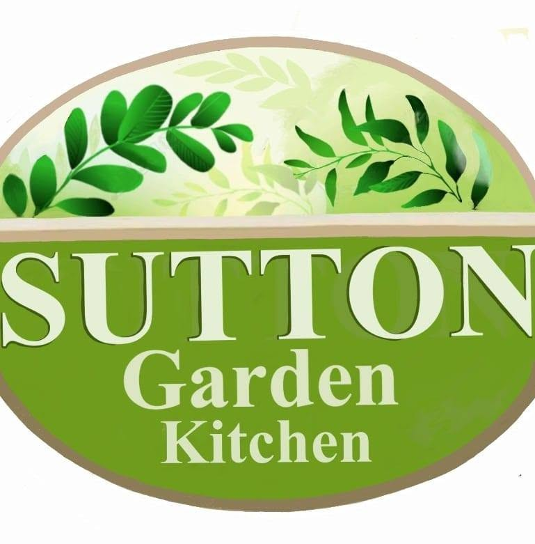
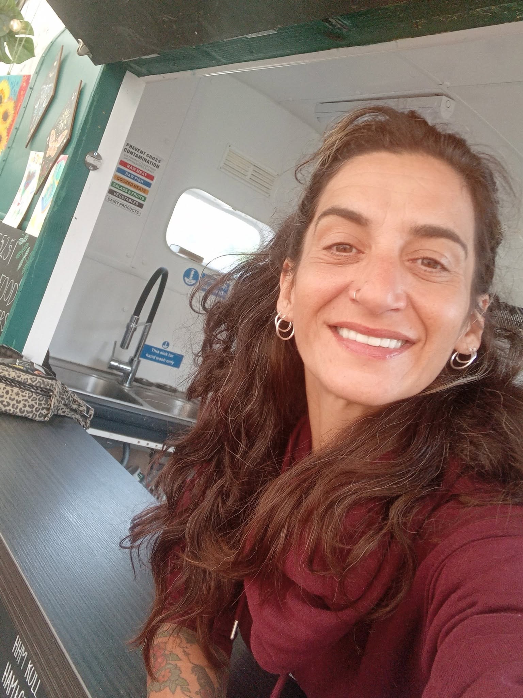
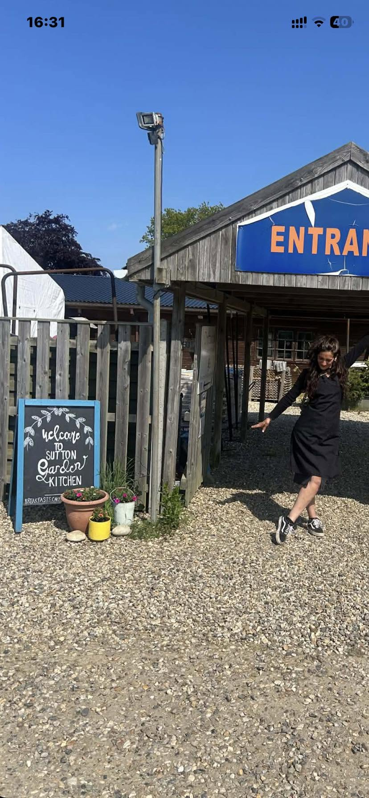

For a very good morning
Proper breakfasts
Hearty cooked breakfasts and generously filled baps, with all our meat from Cawdrons Butchers.

SuttonGarden KitchenA little tucked away. A lot to love.
A cosy horse box café with a colourful soul. Come for a proper breakfast, a slice of something lovely, or simply a cuppa and a chat.
Behind Sutton Building Supplies, Norfolk

The friendly face behind it all.Meet Emma. Make yourself at home.
Sutton Garden Kitchen is Emma’s cosy, quirky little café — a horse box kitchen tucked inside a welcoming marquee, behind Sutton Building Supplies.
There are colourful corners, comfy seats, books to swap and a piano. It’s a place to take a breather, enjoy something tasty and feel welcome, just as you are.
Whether you’re popping in for breakfast or settling in with a cuppa, Emma would love to say hello.
There’s a little more to us
A few of our favourite corners. A little colour, a little music, and plenty of character.
Worth finding. Easy to love.
We’re tucked away behind Sutton Building Supplies.
Look for our welcome sign and come on in.
Behind Sutton Building Supplies
Get directions Call Emma 07342 269963All major credit and debit cards accepted, as well as cash.
| Wednesday | 9am – 2pm |
|---|---|
| Thursday | 9am – 2pm |
| Friday | 9am – 2pm |
| Saturday | 9am – 2pm |
| Sunday – Tuesday | Closed |
Planning a special trip? Give Emma a call to check any changes to our usual hours.

Find us on Google Maps